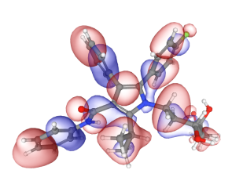
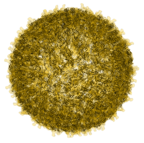
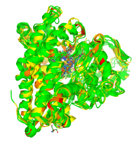
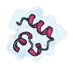
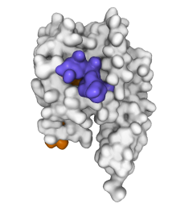

Mol* (/'molstar/) is a modern web-based open-source toolkit for visualisation and analysis of large-scale molecular data
Open Mol* Viewer
Viewer Documentation
Issues & Feedback
High-performance graphics and data handling of the Mol* Viewer allow users to simultaneously visualise up to hundreds of (superimposed) protein structures, play molecular dynamics trajectories, render cell-level models at atomic detail with tens of millions of atoms, or display huge models obtained by I/HM such as the Nuclear Pore Complex.
Interactive Examples




Villin folding trajectory by Stefan Doerr (doi:10.6084/m9.figshare.12040257.v1)

GAIN domain tethered agonist exposure (doi:10.1016/j.molcel.2020.12.042). Based on an animation by Ramon Guixà-González.
Join Development on GitHub
The Mol* toolkit provides a comprehensive solution for molecular data delivery, visualization and analysis that can be embedded into a wide range of 3rd party solutions. It includes a customizable plugin for high quality WebGL based molecular data visualization,
as well as servers for model and experimental (X-ray, Cryo-EM, etc.) data delivery, efficient BinaryCIF data format support, and other exciting features.
The project is an open collaboration started by
Copyright 2018–now, Mol* Contributors | Terms of Use & GDPR